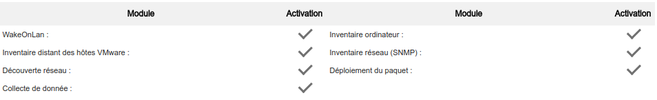
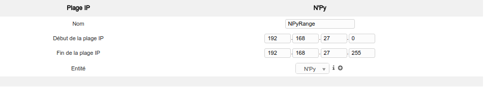
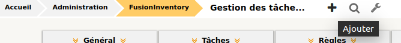
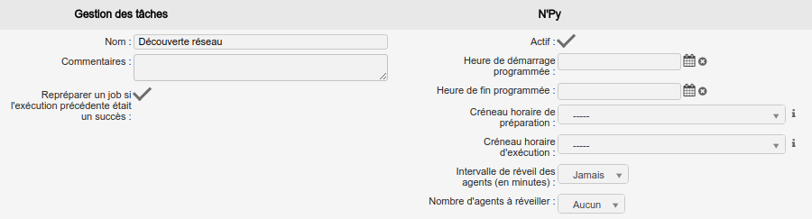
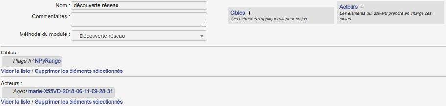
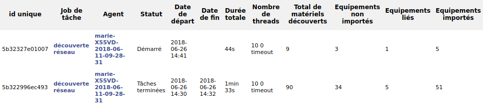
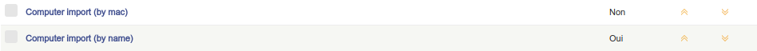
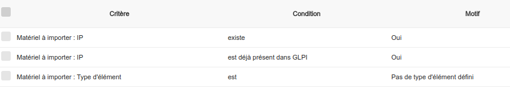
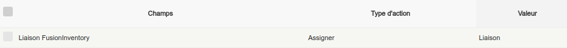
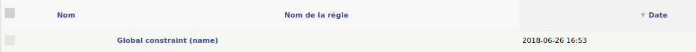

Découverte et inventaire réseau
Paramétrage des agents
La découverte et l'inventaire réseau se font grâce aux remontées des agents. Pour cela, il faut spécifier les actions qu'un agent est autorisé à réaliser. Il faut se rendre dans Administration > FusionInventory puis Général > Gestion des agents et sélectionner l'agent concerné. Dans l'onglet Modules des agents, cocher les modules souhaités et mettre à jour.
Les différents modules permettent de :
- WakeOnLan : réveil des ordinateurs à distance
- Inventaire distant des hôtes VMWare : inventaire des caractéristiques, composants et logiciels d'une machine virtuelle VMWare
- Découverte réseau : scan du réseau à la découverte d'équipements
- Collecte de données : collecte de données de base de registre et de WMI
- Inventaire ordinateur : inventaire des caractéristiques, composants et logiciels d'un ordinateur
- Inventaire réseau (SNMP) : lecture des informations SNMP transitants sur le réseau
- Déploiement du paquet : installation ou mise à jour à distance d'une application

figure : sélection des modules d'un agent
Les agents peuvent également être paramétrés dans l'onglet Administration > FusionInventory puis Général > Configuration générale > Modules des agents.
Note
Il peut être intéressant d'augmenter le nombre de threads alloués à la découverte et à l'inventaire dans l'onglet Agent.
Configuration d'une découverte et d'un inventaire
Afin de configurer le lancement d'une découverte réseau et de l'inventaire il faut dans un premier temps définir la plage d'adresses IP qui sera analysée. Pour ce faire, sous FusionInventory, se rendre dans l'onglet Réseaux > Plage IP et définir les adresses de début et de fin.

Des authentifications SNMP doivent être liées à la plage IP afin de couvrir un maximum de matériel. Toujours sous Réseaux > Plage IP, ajouter les versions 1 puis 2c de SNMP.
L'exécution d'un agent se présente sous forme de tâches. Afin de les créer, il faut se rendre dans FusionInventory et Tâches > Gestion des tâches. Pour en ajouter une, cliquer sur "+".

Créer une tâche de découverte réseau et l'activer.

Ensuite, lui ajouter un job associé au module de découverte réseau et lui attribuer l'agent du serveur et la plage d'adresses IP.

Une tâche doit également être créée pour effectuer l'inventaire réseau. Réitérer l'opération de création d'une tâche en précisant "SNMP" pour le nom et en affectant le module "Inventaire réseau (SNMP)" au nouveau job.
Il est maintenant possible d'exécuter les nouvelles tâches. La crontab modifiée précédemment permet le lancement régulier des tâches mais il est également possible de forcer leur exécution grâce à sudo fusioninventory-agent.
La découverte et l'inventaire réseau peuvent prendre plusieurs minutes. Afin d'en suivre l'évolution, il est possible de se rendre dans FusionInventory et dans l'onglet Réseau > Etat des découvertes ou bien Réseau > Statut de l'inventaire réseau.

Note
Si une tâche est bloquée sur "préparé", exécuter la tâche taskscheduler qui se trouve dans Configuration > Actions automatiques et relancer la tâche.
Les équipements trouvés se situent désormais dans l'inventaire. Pour les visionner, se rendre dans l'onglet Parc de GLPI. Les informations récupérées par les agents permettent d'affecter automatiquement les machines dans les bons types et de remplir ses caractéristiques. Si un agent ne récupère pas assez d'informations (au minimum le type) l'équipement sera situé dans l'onglet Parc > Equipement non-géré. Il est possible de remplir les informations à la main et de faire un import. Il est à noter que certains éléments peuvent ne pas être connus par FusionInventory. Cependant, les développeurs rajoutent des machines à chaque release afin de combler ces lacunes.
Note
Un équipement peut être supprimé des différentes listes, attention cependant à le supprimer de le corbeille sinon il sera considéré comme existant et ne pourra être re-découvert.
Gestion des règles d'import
Afin de générer un inventaire cohérent, des règles d'import doivent être appliquées. Celles-ci sont modifiables sous l'onglet Administration > FusionInventory et Règles > Règles d'import et de liaison des matériels. Il est possible d'activer/désactiver les différentes règles.

Pour créer une nouvelle règle, cliquer sur le bouton "+" de cette même page. Après lui avoir ajouté un nom, il est possible de définir les critères de prise en compte de cette règle et les actions à réaliser.
Par exemple, on peut définir le crière de la règle "NetworkEquipment update (by ip)" comme étant l'existence dans GLPI de l'adresse IP d'un équipement réseau trouvé et comme action de choisir de ne pas réimporter l'équipement avec cette adresse IP mais de le mettre à jour.


De plus, il est à savoir que les règles sont exécutées dans l'ordre, il faudra les déplacer selon le besoin.
Dans l'onglet Administration > FusionInventory et Règle > Matériel ignoré durant l'import, les équipements qui ne sont pas remontés jusqu'à GLPI peuvent être consultés. Afin de voir les règles qui ont bloqué ce passage, il est nécessaire d'ajouter la colonne "Nom de la règle".

Indications sur les imprimantes
A la fin d'une découverte réseau, des imprimantes peuvent être apparues. Il est possible de visualiser les niveaux d'encre en se rendant sur l'imprimante puis dans l'onglet FusionInventory SNMP. Le nombre de pages imprimées peut être également consultable en se rendant dans l'imprimante puis sur l'intitulé "Compteur de pages actuel".
Indications sur les téléphones
Seuls les téléphones IP seront inventoriés dans l'onglet Parc > Téléphones. Les mobiles nécessitent le déploiement d'un agent, comme l'agent Android, et seront visibles dans l'onglet Parc > Ordinateurs.